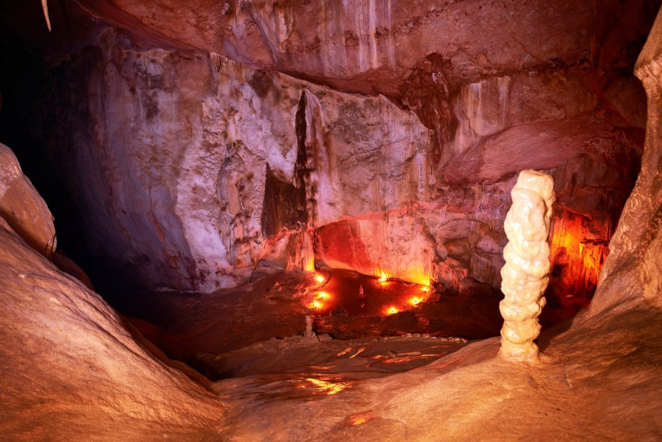

<h2>2. Пещеры Вайтомо, Новая Зеландия</h2>
Пещеры Вайтомо в новозеландском регионе Уаикато и сами по себе довольно интересны: здесь можно наблюдать замысловатые известняковые наросты и причудливые ходы, созданные много столетий назад. Но то, что делает их поистине уникальными и что стоит увидеть, — «обитатели» Пещеры Светлячков. Это тысячи комариков, которые, скапливаясь на ее сводах, создают эффект «звездного неба».
</br>

</br>


